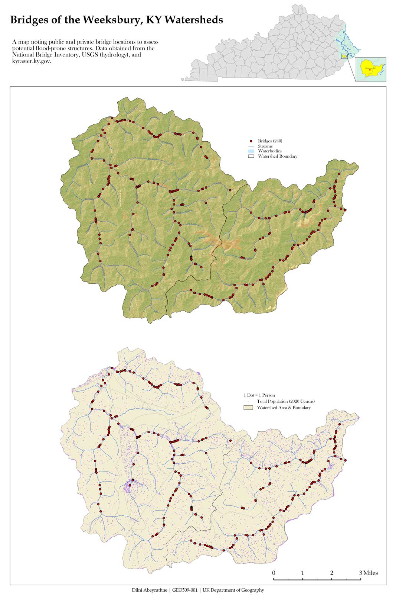
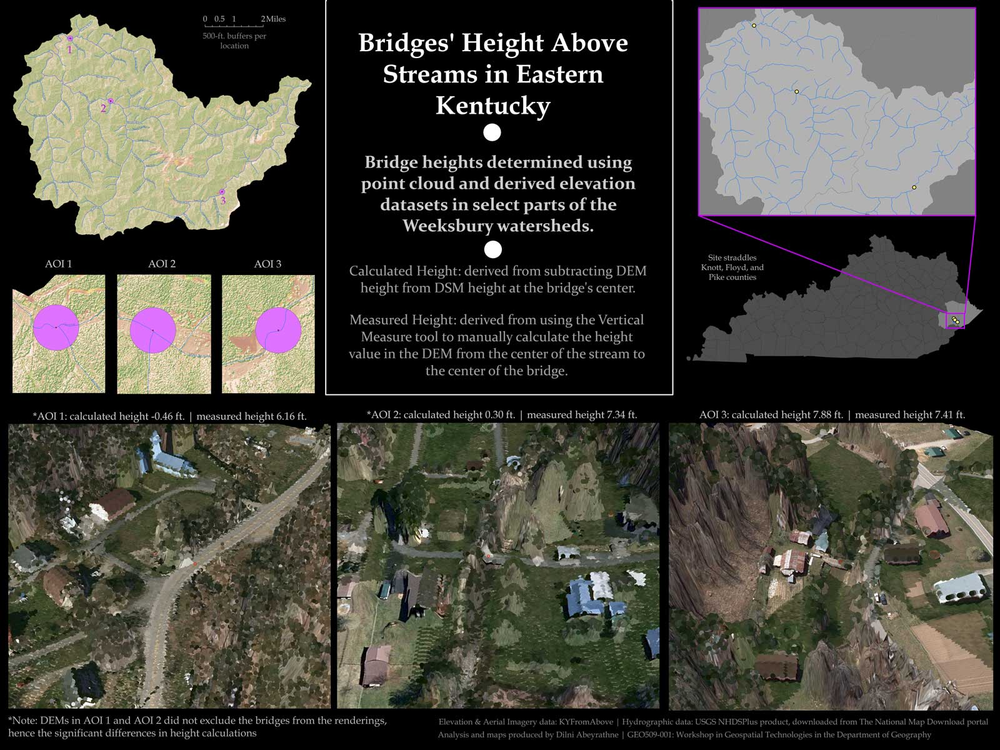
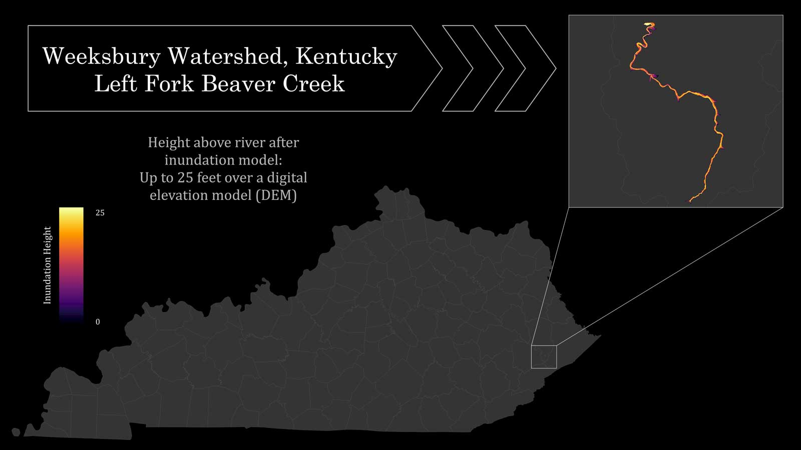
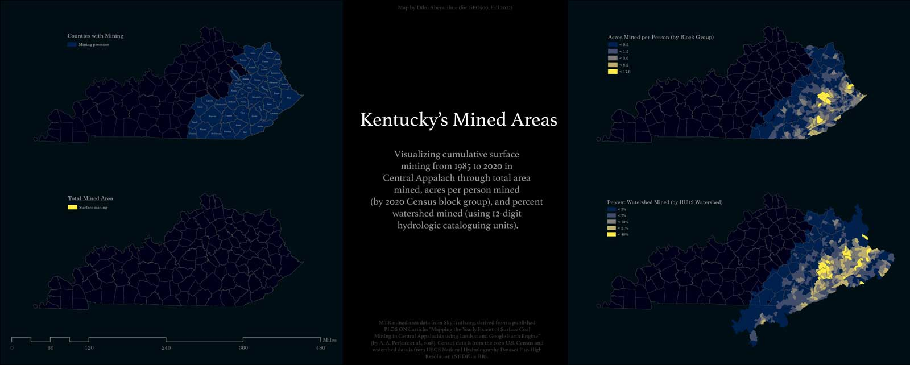

Weeksbury, KY Watersheds
An analysis of flood-prone infrastructure and conditions in the Weeksbury watershed in Eastern Kentucky.
A summary of goals, methodology, and results.
01: Community

High resolution version
02: Infrastructure

High resolution version
03: Inundation

High resolution version
04: Terrain

High resolution version